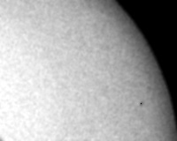
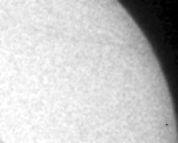

2003-05-07, Прохождение Меркурия по диску Солнца
Использовалась цифровая камера и подзорная труба "Турист" с увеличением 10 и диаметром объектива 30мм. Справа выше диаметра вблизи края Солнца виден Меркурий, который перемещался слева направо. В подписях к снимкам указано московское зимнее время.
12:51 Для фотографирования Солнца перед объективом расположен фильтр из дискеты в два слоя. Суммарное ослабление света - 4000000. Выдержка 1/60c, диафрагма 4.8. На увеличенной фотографии (клик по картинке) правее и выше центра видно солнечное пятно. Менее тёмные пятна теряются на фоне зернистости. Искажения: пересекающий Солнце провод и светлый круглый блик.

12:54 Этот снимок сделан через фильтр из одной дискеты, ослабляющей свет в 2000 раз. Выдержка 1/2000с, диафрагма 11. Кроме центрального пятна, которое попало на изображение горизонтального провода, видны два солнечных пятна внизу справа. Искажения: тени двух проводов и смещение центра яркости от центра диска Солнца, вызванное несоосностью подзорной трубы и объектива фотоаппарата.
На следующих кадрах видно перемещение Меркурия со временем. Масштаб и ориентация диска Солнца согласованы путём наложения солнечных пятен. Большое пятно вблизи центра Солнца помещено в левый нижний угол снимка. Изображение Солнца повёрнуто вокруг оси так, чтобы центральное пятно и левое из двух нижних пятен располагались на одной вертикали. Цвет сделан серым, чтобы ослабить различие параметров съёмки. Центр Меркурия отмечен чёрной точкой размером 1 пиксел.
Положение Меркурия на диске Солнца в разные моменты времени.

12:38

12:54

13:11
При совмещении трёх кадров мoжно оценить путь Меркурия и его скорость. Красной линией показан путь Меркурия.


Крепление подзорной трубы с цифровой камерой сделано из
дощечки.